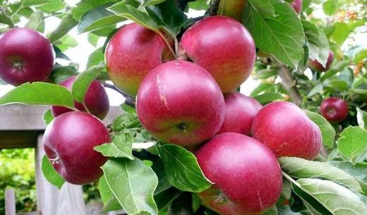
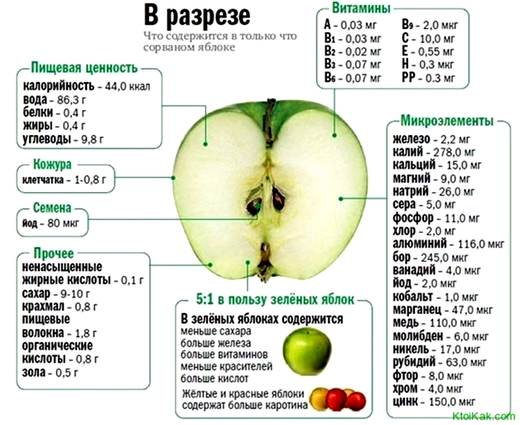
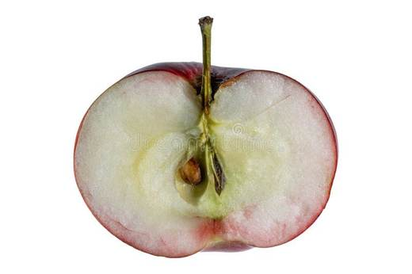
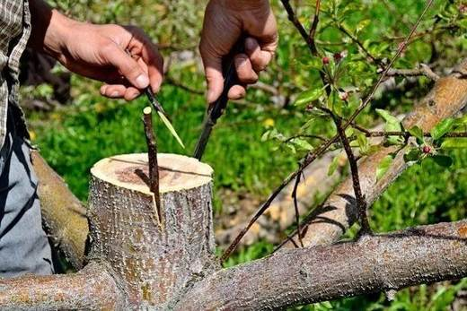
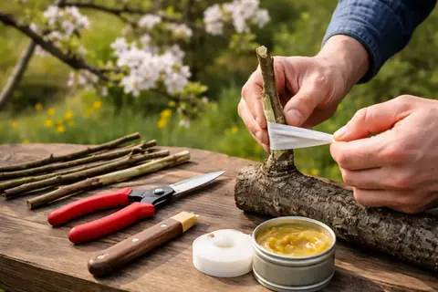

Четвёртая яблоня шестого ряда — тёмная лошадка. В этом сезоне соберите «досье» на неё: срок созревания, вид и вкус плодов — и мы определим сорт вместе.





Клик по фото — полный размер. Фотографии иллюстрируют сорт/вид; собраны из открытых источников (питомники, сортовые каталоги, Википедия).
Пока сорт не установлен, дерево получает тот же уход, что и остальные яблони сада: весенняя обрезка, подкормки, защита от парши и плодожорки, побелка.
Главная задача сезона — собрать «досье» на незнакомку. Ниже — простой план идентификации, который используют опытные садоводы.
| Уход до идентификации | общий для яблонь сада |
| Обрезка | весенняя, санитарная + прореживание |
| Защита | парша, плодожорка — по общей схеме сада |
| Наблюдение | фотодосье: цветение → плоды → разрез → лёжкость |
Советы собраны из отзывов садоводов на форумах и из практики питомников; цитаты приведены по источникам ниже.